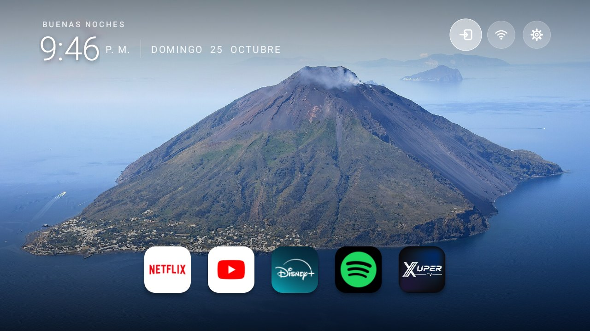
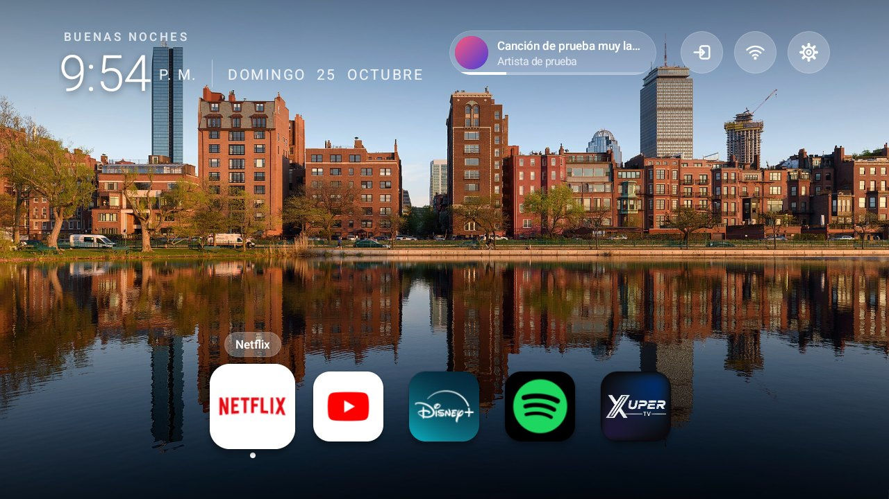
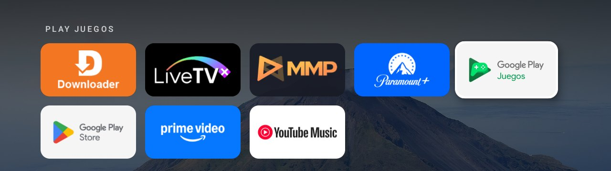
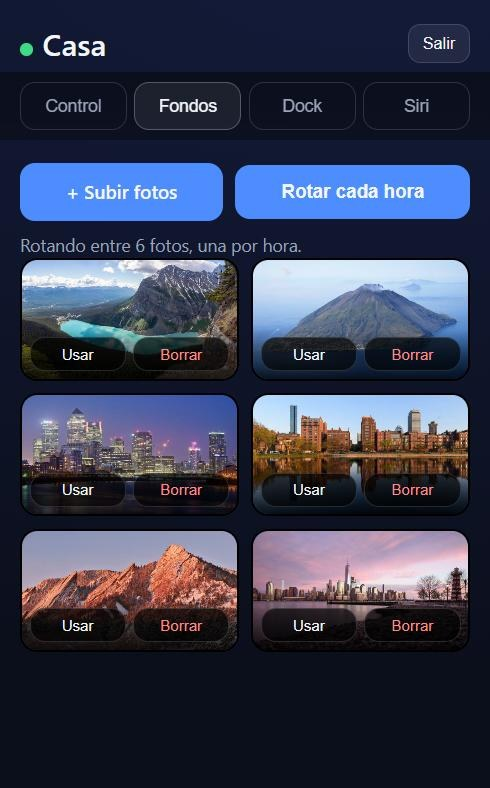

Casa es una pantalla de inicio ligera para Google TV: una foto a pantalla completa, tus apps en una fila abajo y un panel web, con código QR, para controlarlo todo desde el iPhone.
Cómo instalarlaDescargar APK (30 KB)
Foto: «Aerial image of Stromboli» de Carsten Steger, CC BY-SA 4.0, vía Wikimedia Commons.
Está hecha para una TV con 1 GB de RAM, así que no usa librerías y casi no consume: el APK pesa unos 30 KB.
Fotos que rotan cada hora, o una fija. Pon las que quieras, sin límite de cantidad.
Tus apps favoritas en una fila; la enfocada crece y muestra su nombre. Abajo se abre «todas las apps».
Una cápsula arriba muestra la carátula, el título y el avance de lo que reproduzcan Spotify, YouTube Music u otra app. OK pausa o reanuda.
Abre una página desde tu celular (QR y PIN) para controlar la TV, cambiar fondos y ordenar el dock.
No desactiva el launcher de Google ni toca el Wi-Fi: un servicio de accesibilidad trae Casa al frente al pulsar Home.



La TV sirve una página en tu red local. Escaneas el código QR que aparece en la TV (pulsa Abajo en el Home) con la cámara del iPhone y entras sin escribir nada.
Reproducir, pausar, siguiente, volumen, Inicio y Atrás, y toda tu lista de apps para abrirlas en la TV.
Sube fotos desde el celular, incluidas las del iPhone: se enderezan y se reducen antes de enviarse. Fija una, rota todas, o borra.
Sube, baja, quita o agrega apps. El cambio se ve al instante.
Copia una dirección, pégala en la acción «Obtener contenido de URL» de Atajos, y di «Oye Siri, Netflix en la tele».
En Safari, Compartir → «Agregar a pantalla de inicio»: se abre a pantalla completa con su propio ícono.
Solo responde dentro de tu red. Tras 8 PIN incorrectos se bloquea un minuto. Va sin cifrar (http), como cualquier servicio local.
Necesitas una computadora en la misma red que la TV y ADB. Todo es reversible.
adb pair <ip>:<puerto-de-emparejado> adb connect <ip>:<puerto>
adb install -r casa.apk adb shell pm grant dev.joseo.casa android.permission.WRITE_SECURE_SETTINGS adb shell cmd notification allow_listener dev.joseo.casa/dev.joseo.casa.NowPlayingListener adb shell am start -n dev.joseo.casa/.HomeActivity
APK compilado con la clave de depuración. SHA-256: …
Para quitarla: adb uninstall dev.joseo.casa. El launcher de Google nunca se desactiva.